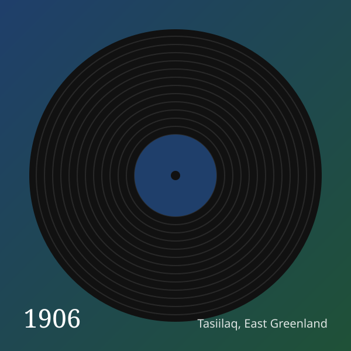

Settling a quarrel with a drum

In East Greenland, two people with a real grievance could take it to the whole settlement. Each stood with the frame drum and sang mocking songs at the other. The audience laughed, and the laughter was the verdict. It was a grudge given rules, a stage and a judge, and no one had to die.
In 1906 the Danish linguist William Thalbitzer carried a phonograph to Ammassalik, now Tasiilaq. A woman he wrote down as K'iwingatāk' sang a duel song into the horn. It lasts about a minute.
The cylinder survives in Copenhagen and was published on Inuit: 55 Historical Recordings (ULO, Nuuk / Sub Rosa). These are Greenlandic cultural recordings, and any further use is for Greenlandic voices to decide.